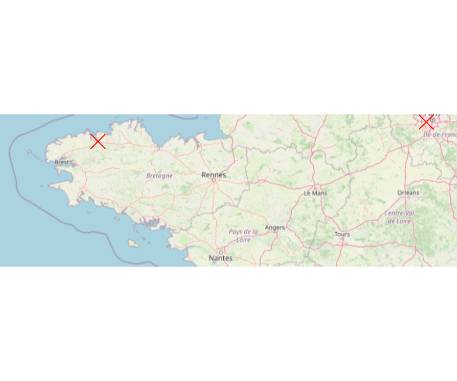

Chapitre 4 Georéférencement
4.1 Géocoder des adresses
Plusieurs packages permettent de géocoder des adresses.
Le package tidygeocoder (Cambon et al., 2021) permet d’utiliser un grand nombre de services de géocodage en ligne.
4.1.1 tidygeocoder
library(tidygeocoder)
mes_adresses <- data.frame(
address = c("10 Emma Goldmanweg, 5032MN Tilburg, Netherlands",
"19 rue Michel Bakounine, 29600 Morlaix, France")
)
places <- geocode(mes_adresses, address)
places# A tibble: 2 × 3
address lat long
<chr> <dbl> <dbl>
1 10 Emma Goldmanweg, 5032MN Tilburg, Netherlands 51.5 5.04
2 19 rue Michel Bakounine, 29600 Morlaix, France 48.6 -3.824.2 Transformer les données long/lat en objet sf
La fonction st_as_sf() permet de transformer un data.frame contenant des coodonnées géographiques en objet sf. Ici nous utilisons le data.frame places2 créé au point précédent.
Simple feature collection with 2 features and 1 field
Geometry type: POINT
Dimension: XY
Bounding box: xmin: -3.816434 ymin: 48.59041 xmax: 5.038699 ymax: 51.53649
Geodetic CRS: WGS 84
# A tibble: 2 × 2
address geometry
* <chr> <POINT [°]>
1 10 Emma Goldmanweg, 5032MN Tilburg, Netherlands (5.038699 51.53649)
2 19 rue Michel Bakounine, 29600 Morlaix, France (-3.816435 48.59041)Pour créer un objet sf de type POINT avec uniquement une paire de coordonnées (WGS84, longitude=0.5, latitude = 45.5) :
library(sf)
mon_point <- st_as_sf(data.frame(x = 0.5, y = 45.5), coords = c("x", "y"), crs = 4326)
mon_pointSimple feature collection with 1 feature and 0 fields
Geometry type: POINT
Dimension: XY
Bounding box: xmin: 0.5 ymin: 45.5 xmax: 0.5 ymax: 45.5
Geodetic CRS: WGS 84
geometry
1 POINT (0.5 45.5)Nous pouvons afficher cet objet sf sur un fond de carte OpenStreetMap avec le package maptiles (Giraud, 2021a).
library(maptiles)
osm <- get_tiles(x = place_sf, zoom = 7)
plot_tiles(osm)
plot(st_geometry(place_sf), pch = 4, cex = 2, col = "red", add = TRUE)
4.3 Digitalisation
Le package mapedit (Appelhans et al., 2020) permet de digitaliser des fonds de carte directement dans R.
Bien que pouvant se révéler pratique dans certains cas, ce package ne saurait se substituer aux fonctionnalités d’un SIG pour les tâches de digitalisation importantes.
mapedit website